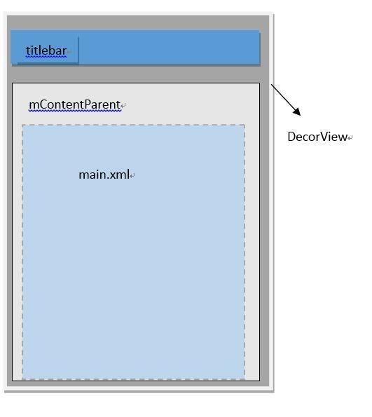

简介
Activity并不负责视图控制，它只是控制生命周期和处理事件，真正控制视图的是Window。一个Activity包含了一个Window，Window才是真正代表一个窗口，Window 中持有一个 DecorView，而这个DecorView才是 view 的根布局
DecorView是FrameLayout的子类，它可以被认为是Android视图树的根节点视图。DecorView作为顶级View，一般情况下它内部包含一个竖直方向的LinearLayout，在这个LinearLayout里面有上下两个部分（具体情况和Android版本及主体有关），上面的是标题栏，下面的是内容栏。在Activity中通过setContentView所设置的布局文件其实就是被加到内容栏之中的，而内容栏的id是content，在代码中可以通过ViewGroup content = （ViewGroup)findViewById(R.android.id.content)来得到content对应的layout。
ViewRoot对应ViewRootImpl类，它是连接WindowManagerService和DecorView的纽带，View的三大流程(测量（measure），布局（layout），绘制（draw）)均通过ViewRoot来完成。ViewRoot并不属于View树的一份子。从源码实现上来看，它既非View的子类，也非View的父类，但是，它实现了ViewParent接口，这让它可以作为View的名义上的父视图。RootView继承了Handler类，可以接收事件并分发，Android的所有触屏事件、按键事件、界面刷新等事件都是通过ViewRoot进行分发的。ViewRoot可以被理解为“View树的管理者”——它有一个mView成员变量，它指向的对象和上文中Window和Activity的mDecor指向的对象是同一个对象。
从 setContentView 分析起
众所周知，在 activity 中，setContentView方法可以设置我们需要的布局，那么就从这个作为切入点开始分析
//activity
public void setContentView(View view, ViewGroup.LayoutParams params) {
getWindow().setContentView(view, params);
initWindowDecorActionBar();
}
/**
* Retrieve the current {@link android.view.Window} for the activity.
* This can be used to directly access parts of the Window API that
* are not available through Activity/Screen.
*
* @return Window The current window, or null if the activity is not
* visual.
*/
public Window getWindow() {
return mWindow;
}
继续寻找 mWindow 的赋值时机
final void attach(Context context, ActivityThread aThread,
...
mWindow = new PhoneWindow(this);
mWindow.setCallback(this);//当window接收系统发送给它的IO输入事件时,例如键盘和触摸屏事件,就可以转发给相应的Activity
mWindow.setOnWindowDismissedCallback(this);
mWindow.getLayoutInflater().setPrivateFactory(this);
if (info.softInputMode != WindowManager.LayoutParams.SOFT_INPUT_STATE_UNSPECIFIED) {
mWindow.setSoftInputMode(info.softInputMode);
}
可以看到在attach，实例化了一个PhoneWindow对象（window 的实现），继续看 window 中 setContentView的实现
@Override
public void setContentView(int layoutResID) {
// Note: FEATURE_CONTENT_TRANSITIONS may be set in the process of installing the window
// decor, when theme attributes and the like are crystalized. Do not check the feature
// before this happens.
if (mContentParent == null) {
installDecor();//[window]如何没有DecorView,那么就新建一个
} else if (!hasFeature(FEATURE_CONTENT_TRANSITIONS)) {
mContentParent.removeAllViews();
}
if (hasFeature(FEATURE_CONTENT_TRANSITIONS)) {
final Scene newScene = Scene.getSceneForLayout(mContentParent, layoutResID,
getContext());
transitionTo(newScene);
} else {
mLayoutInflater.inflate(layoutResID, mContentParent); //[window]第二步,将layout添加到mContentParent
}
mContentParent.requestApplyInsets();
final Callback cb = getCallback();
if (cb != null && !isDestroyed()) {
cb.onContentChanged();
}
}
//注意 mContentParent的注释，后续做分析
// This is the view in which the window contents are placed. It is either
// mDecor itself, or a child of mDecor where the contents go.
private ViewGroup mContentParent;
创建DecorView
继续看 PhoneWindow 中的installDecor() 方法
private void installDecor() {
if (mDecor == null) {
mDecor = generateDecor(); //DecorView 被赋值
mDecor.setDescendantFocusability(ViewGroup.FOCUS_AFTER_DESCENDANTS);
mDecor.setIsRootNamespace(true);
if (!mInvalidatePanelMenuPosted && mInvalidatePanelMenuFeatures != 0) {
mDecor.postOnAnimation(mInvalidatePanelMenuRunnable);
}
}
if (mContentParent == null) {
mContentParent = generateLayout(mDecor);
...
protected DecorView generateDecor() {
return new DecorView(getContext(), -1);
}
protected ViewGroup generateLayout(DecorView decor) {
// Apply data from current theme.
// 从主题文件中获取样式信息
TypedArray a = getWindowStyle();
...
if (a.getBoolean(R.styleable.Window_windowNoTitle, false)) {
requestFeature(FEATURE_NO_TITLE);
} else if (a.getBoolean(R.styleable.Window_windowActionBar, false)) {
// Don't allow an action bar if there is no title.
requestFeature(FEATURE_ACTION_BAR);
}
if(...){
...
}
//[window] 以上都是根据不同的style生成不同的decorview
// Inflate the window decor.
// 加载窗口布局
int layoutResource;
int features = getLocalFeatures();
// System.out.println("Features: 0x" + Integer.toHexString(features));
if ((features & (1 << FEATURE_SWIPE_TO_DISMISS)) != 0) {
layoutResource = R.layout.screen_swipe_dismiss;
} else if(...){
...
}
View in = mLayoutInflater.inflate(layoutResource, null); //加载layoutResource
decor.addView(in, new ViewGroup.LayoutParams(MATCH_PARENT, MATCH_PARENT)); //往DecorView中添加子View，即mContentParent，// 加入到deco中,所以应该是其第一个child
mContentRoot = (ViewGroup) in;
ViewGroup contentParent = (ViewGroup)findViewById(ID_ANDROID_CONTENT); // 这里获取的就是mContentParent
if (contentParent == null) {
throw new RuntimeException("Window couldn't find content container view");
}
if ((features & (1 << FEATURE_INDETERMINATE_PROGRESS)) != 0) {
ProgressBar progress = getCircularProgressBar(false);
if (progress != null) {
progress.setIndeterminate(true);
}
}
if ((features & (1 << FEATURE_SWIPE_TO_DISMISS)) != 0) {
registerSwipeCallbacks();
}
// Remaining setup -- of background and title -- that only applies
// to top-level windows.
...
return contentParent;
}
由以上代码可以看出，该方法还是做了相当多的工作的，首先根据设置的主题样式来设置DecorView的风格，比如说有没有titlebar之类的，接着为DecorView添加子View，而这里的子View则是上面提到的mContentParent，如果上面设置了FEATURE_NO_ACTIONBAR，那么DecorView就只有mContentParent一个子View，这也解释了上面的注释：mContentParent是DecorView本身或者是DecorView的一个子元素。

小结：
- DecorView是顶级View，内部有titlebar和contentParent两个子元素，contentParent的id是content，而我们设置的main.xml布局则是contentParent里面的一个子元素。
- 在DecorView创建完毕后，让我们回到PhoneWindow#setContentView方法，LayoutInflater.inflate(layoutResID, mContentParent);这里加载了我们设置的main.xml布局文件，并且设置mContentParent为main.xml的父布局，
到目前为止，通过setContentView方法，创建了DecorView和加载了我们提供的布局，但是这时，我们的View还是不可见的，因为我们仅仅是加载了布局，并没有对View进行任何的测量、布局、绘制工作。在View进行测量流程之前，还要进行一个步骤，那就是把DecorView添加至window中，然后经过一系列过程触发ViewRootImpl#performTraversals方法，在该方法内部会正式开始测量、布局、绘制这三大流程。
将DecorView添加至Window
每一个Activity组件都有一个关联的Window对象，用来描述一个应用程序窗口。每一个应用程序窗口内部又包含有一个View对象，用来描述应用程序窗口的视图。上文分析了创建DecorView的过程，现在则要把DecorView添加到Window对象中。而要了解这个过程，我们首先要简单先了解一下Activity的创建过程：
首先，在ActivityThread#handleLaunchActivity中启动Activity，在这里面会调用到Activity#onCreate方法，从而完成上面所述的DecorView创建动作，当onCreate()方法执行完毕，在handleLaunchActivity方法会继续调用到ActivityThread#handleResumeActivity方法，
final void handleResumeActivity(IBinder token, boolean clearHide, boolean isForward) {
//...
ActivityClientRecord r = performResumeActivity(token, clearHide); // 这里会调用到onResume()方法
if (r != null) {
final Activity a = r.activity;
//...
if (r.window == null && !a.mFinished && willBeVisible) {
r.window = r.activity.getWindow(); // 获得window对象
View decor = r.window.getDecorView(); // 获得DecorView对象
decor.setVisibility(View.INVISIBLE);
ViewManager wm = a.getWindowManager(); // 获得windowManager对象
WindowManager.LayoutParams l = r.window.getAttributes();
a.mDecor = decor;
l.type = WindowManager.LayoutParams.TYPE_BASE_APPLICATION;
l.softInputMode |= forwardBit;
if (a.mVisibleFromClient) {
a.mWindowAdded = true;
wm.addView(decor, l); // 调用addView方法
}
//...
}
}
}
在该方法内部，获取该activity所关联的window对象，DecorView对象，以及windowManager对象，而WindowManager是抽象类，它的实现类是WindowManagerImpl，所以后面调用的是WindowManagerImpl#addView方法，我们看看源码：
public final class WindowManagerImpl implements WindowManager {
private final WindowManagerGlobal mGlobal = WindowManagerGlobal.getInstance();
...
@Override
public void addView(View view, ViewGroup.LayoutParams params) {
mGlobal.addView(view, params, mDisplay, mParentWindow);
}
}
接着调用了mGlobal的成员函数，而mGlobal则是WindowManagerGlobal的一个实例，那么我们接着看WindowManagerGlobal#addView方法
public void addView(View view, ViewGroup.LayoutParams params,
Display display, Window parentWindow) {
...
ViewRootImpl root;
View panelParentView = null;
synchronized (mLock) {
...
root = new ViewRootImpl(view.getContext(), display); // 1
view.setLayoutParams(wparams);
mViews.add(view);
mRoots.add(root);
mParams.add(wparams);
}
// do this last because it fires off messages to start doing things
try {
root.setView(view, wparams, panelParentView); // 2
} catch (RuntimeException e) {
// BadTokenException or InvalidDisplayException, clean up.
synchronized (mLock) {
final int index = findViewLocked(view, false);
if (index >= 0) {
removeViewLocked(index, true);
}
}
throw e;
}
}
先看①号代码处，实例化了ViewRootImpl类，接着，在②号代码处，调用ViewRootImpl#setView方法，并把DecorView作为参数传递进去，在这个方法内部，会通过跨进程的方式向WMS（WindowManagerService）发起一个调用，从而将DecorView最终添加到Window上，在这个过程中，ViewRootImpl、DecorView和WMS会彼此关联，至于详细过程这里不展开来说了。
最后通过WMS调用ViewRootImpl#performTraverals方法开始View的测量、布局、绘制流程
更多 Android 博文请关注 xuyushi.github.io
参考
http://gold.xitu.io/entry/571338c7c4c9710054cea455
http://www.jianshu.com/p/687010ccad66